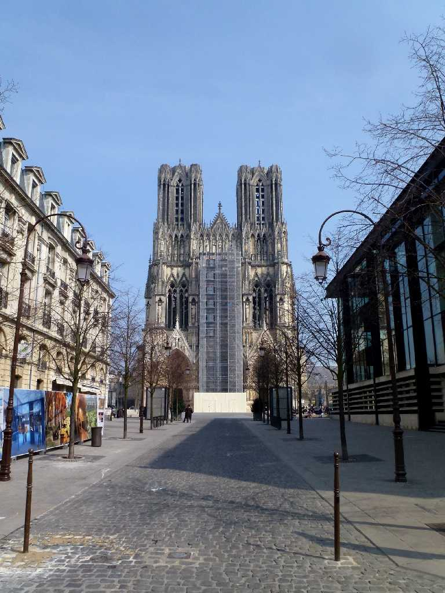
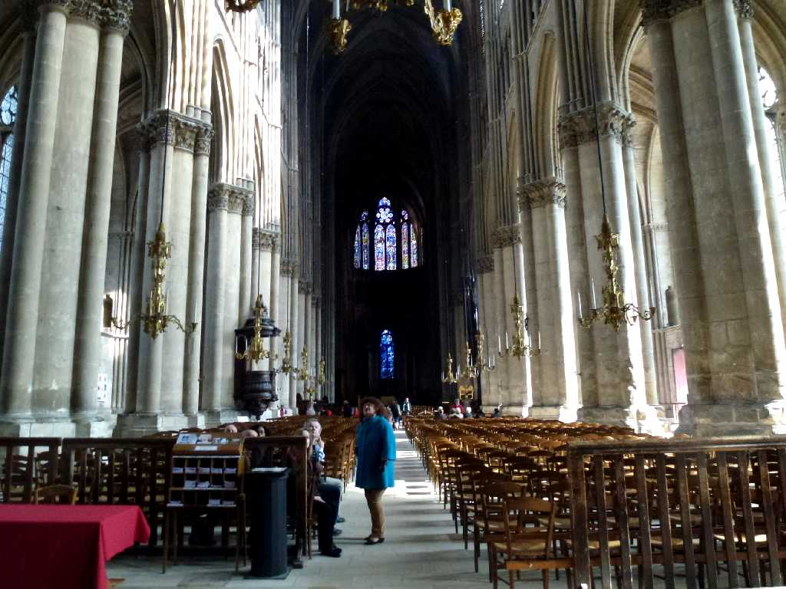
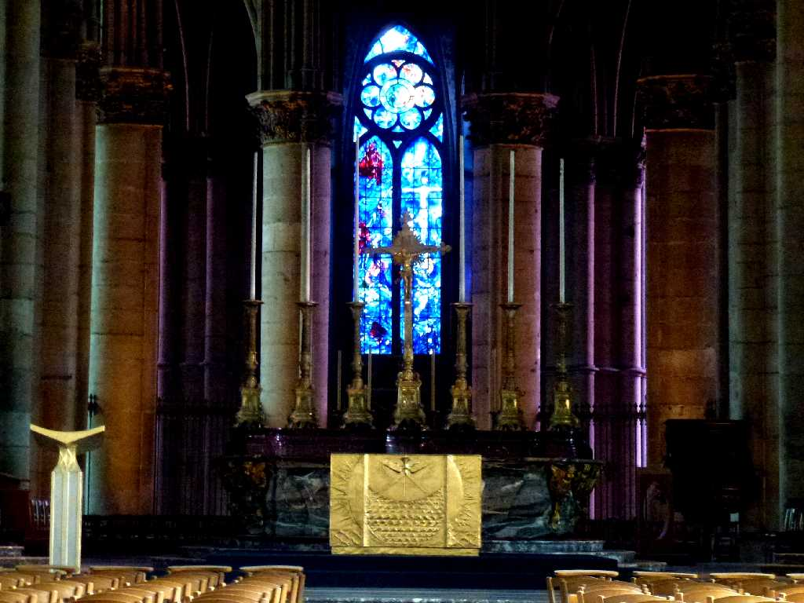
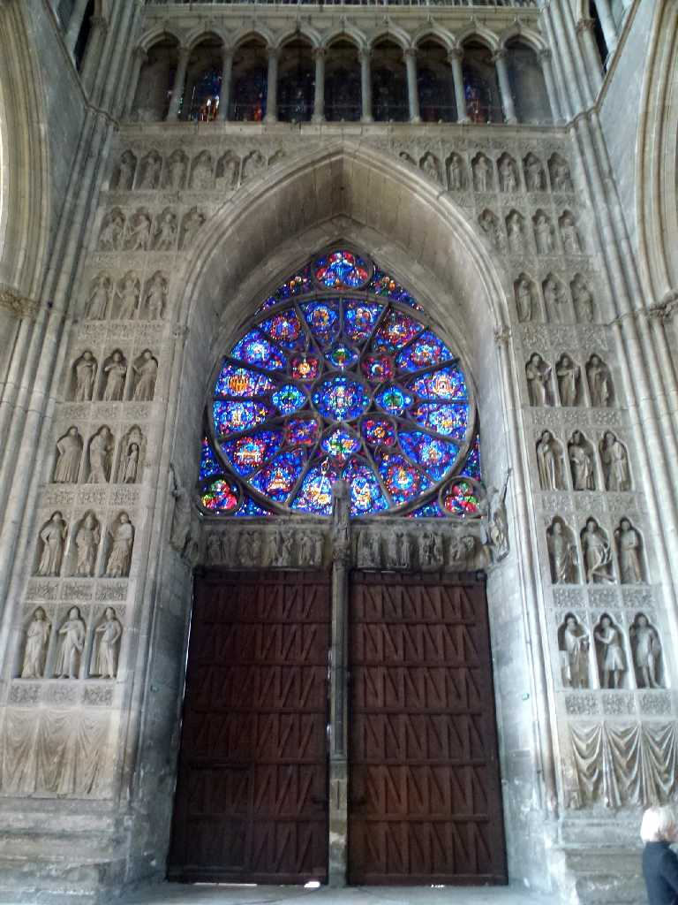
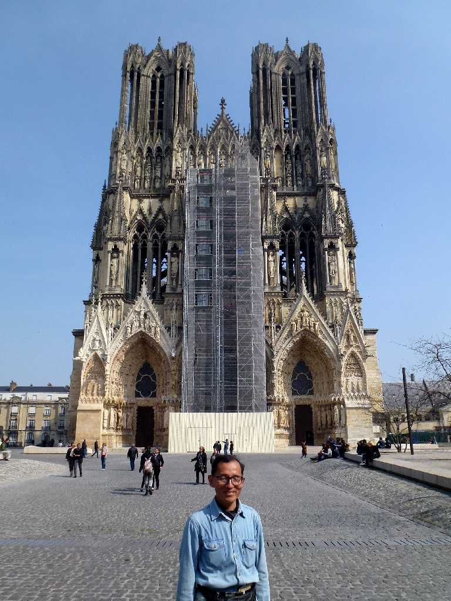
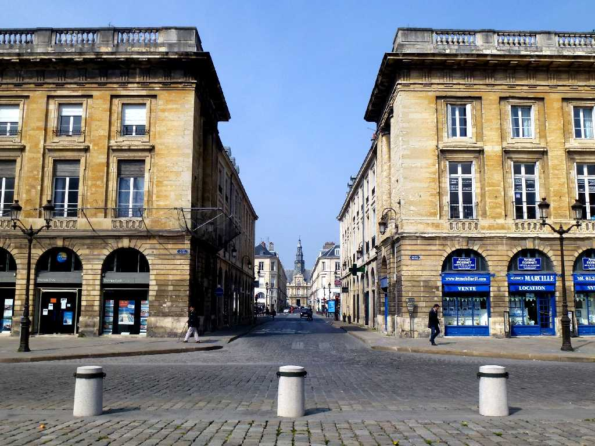

Cathédrale Notre Dame de Reims
１５世紀に完成したゴシック様式の傑作と云われるランスのノートルダム大聖堂

Cathédrale Notre Dame de Reims
４９６年フランス王国初代国王クロヴィスが聖レミ司教から洗礼を受けてから歴代フランス国王の戴冠の聖別式が行われる様になり８１６年にルイ１世が初めて戴冠式を行い以降１８２５年シャルル１０世まで３３人の国王が戴冠式を行った

Altar Cathédrale Notre Dame de Reims

Cathédrale Notre Dame de Reims

March 28 2014 Cathédrale Notre Dame de Reims

L’Hôtel de ville de Reims
ランス市庁舎